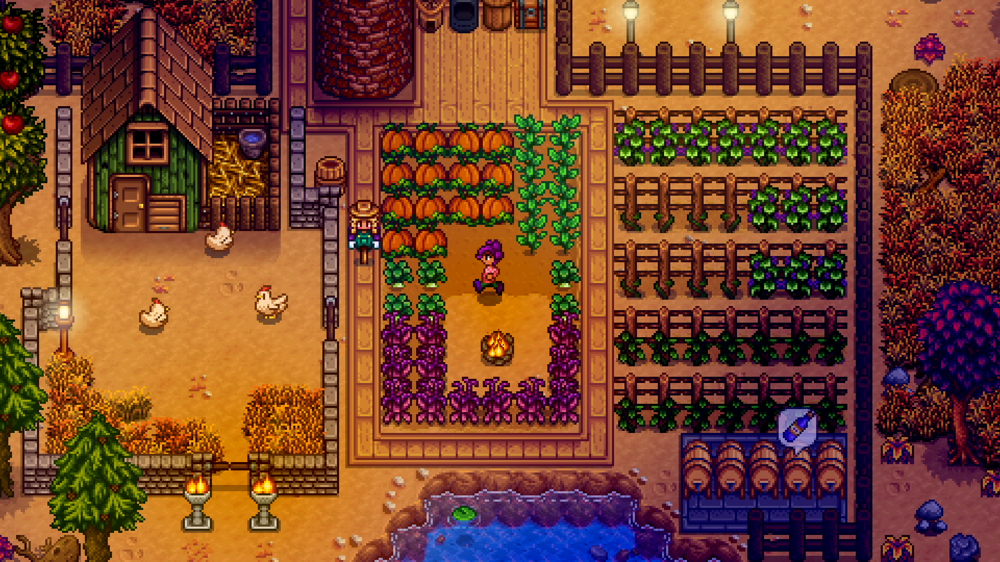

THE CORNMEAL CRUST: In a large bowl, combine the
butter and sugar. Use an electric hand mixer on medium
speed to blend until light and fluffy, about 3 minutes. Add
the egg yolk and blend until smooth.
Add the flour, cornmeal, and ½ teaspoon salt and mix on
low speed until combined and crumbly. Add the milk and
mix until the dough starts to form large crumbles. The
dough is ready when you can squeeze some of it in the
palm of your hand and it holds together.
Use your hands to form the mixture into a mostly smooth
dough, then transfer it to a 9-inch (23 cm) tart pan with a
removable bottom. Press the dough evenly into the
bottom and up the sides of the pan, getting it as close to
⅛ inch (3 mm) thick as possible. Use the bottom of a
drinking glass or a measuring cup to help get the crust
nice and even. Trim any excess dough from the edges of
the tart pan. Prick the bottom of the crust all over with a
fork, then chill in the refrigerator until firm, about 1 hour
and up to overnight.
Set a baking sheet on the lowest rack of the oven and
preheat the oven to 350ºF (175ºC). Line the tart crust with
parchment paper or aluminum foil and fill to the very top of
the crust with dry rice or dried beans.
Place the tart pan on the baking sheet and bake until the
edges of the crust start to feel dry and set, 20 to 25
minutes. Carefully remove the parchment paper and the
rice. Return the crust to the oven and continue to bake
until the edges are golden brown and the dough is cooked
through, about 15 minutes, rotating the baking sheet once
after 8 minutes.
Remove the crust from the oven and cool completely on
the baking sheet. Reduce the oven temperature to 325ºF
(165ºC).
FOR THE BLUEBERRY CURD: In a large saucepan over medium
heat, combine the 8 ounces (225 g) blueberries and the
water and simmer until most of the blueberries have burst
and released their juices, about 8 minutes, stirring
occasionally and smashing some of the juicy berries
against the side of the saucepan.
Strain the blueberry mixture through a fine-mesh strainer
into a large glass bowl, pressing down on the berries to
get every bit of juice out. Be sure to scrape off any pulp
that is stuck to the back of the strainer; only the skin of the
berries should be left in the strainer once you are done.
Rinse out the strainer and place over a medium bowl.
(You will use this later to strain the finished curd.)
Wash out the saucepan and fill it with 1 inch (2.5 cm) of
water. Bring the water to a boil over medium-high heat,
then lower the heat to medium (the water should be
actively simmering).
To the glass bowl with the strained blueberry mixture add
the sugar, ⅓ cup (80 ml) lemon juice, the cornstarch, and
¼ teaspoon salt. Whisk until smooth. Add the eggs and
egg yolks and whisk again until smooth. Put the bowl on
top of the saucepan of simmering water and cook,
whisking constantly, until the mixture thickens to a
consistency similar to a creamy berry milkshake, about 20
minutes. (Taste the curd to ensure that there is no longer
any chalkiness from the cornstarch; if there is, continue to
cook the curd for a couple additional minutes, then taste
the curd again.)
Place the bowl on a kitchen towel or wipe the bottom of
the bowl of any water and place it on a trivet, if possible.
Slowly whisk in the butter, a couple of cubes at a time,
whisking well after each addition, then whisk in the
blueberry preserves until smooth. Strain the curd through
the strainer into the bowl.
